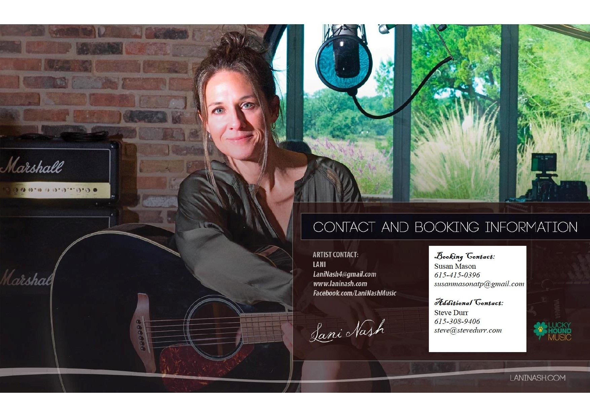

Lani Nash


Lani Nash
Nashville singer/songwriter
About
Nashville singer/songwriter Lani Nash can best be summed up best by a fan who says: "In a matter of two hours at The Bluebird Cafe in Nashville, TN, Lani Nash made me laugh, and cry, and feel things I thought I had forgotten how to feel; It's as if she softly stole my heart right out of my chest, fine tuned every string, and gently placed it back, much lighter and more vibrant than I can ever recall it being. She is witty, intelligent, and kind, and she writes straight from her heart to yours. "For over 20 years, Nash has consistently written and performed throughout the world with such passion and conviction, one cannot help but be moved in her presence. Her 5th, self produced, record is due to be released early Spring of 2019.
Nashville Americans singer-songwriter Lani Nash has toured through-out the USA and Canada from NYC to Los Angeles, and Montreal to VanCouver. Opening for such acts as Mary Chapin-Carpenter, Brian White, Sons of the Desert, Jerry Jeff Walker, Riders in the Sky, and many more. Lani's grandfather Connie "Conway" Crunk, a noted musician, music teacher, singer-songwriter, and producer worked closely with producer Lee Hazelwood who produced Wayne Newton and wrote "These Boots are Made for Walkin"(Nancy Sinatra), was a great inspiration to her.
Lani's live performances include venues such as The Bluebird Cafe, 3rd and Lidsley, Douglas Corner, Bluebird on the Mount, Pensacola songwriter festival, Vermont's Maritime Festival, Legendary Dobbs in Philly, The Bitter End, Bowery Electric, The Living Room, The Blue Door, VZD's, Oklahoma Civic Center, The Paramount Theatre, Luna Star Cafe and The Duncan Showroom
Latest Projects
Testimonials
Stephen Brown. Bose Professional Systems
Lani is such a talent and her music is truly moving...
Michael Silverstone. Travelling Yellow Sofa, Northampton, MA.
Lani Nash's always honest delivery and thought provoking, and often entertainingly dever something of both ballads and up tempo folk repertoire has an appeal that cuts across genres. The combination of her songwriting and her ability to convey emotion make for electriying performance.
Oklahoma City Events
Every now and then the cornucopia of singer/songwriters that is Nashville delivers something both substantive and tasty. From the current crop of Nashville musicians comes Lani Nash, who delivers shades of Mary Chapin Carpenter, Patti Griffin and Reba McEntire, in a style that is uniquely hers...
GotFolk.com
[She has] the heart and soul of Lucinda Williams (think 'Car Wheels on a Gravel Road'), and the timbre and phrasing of Jennifer Nettles (think Sugarland's 'Stay')'.
Amazon Review
Really, independent artists don't get much better than this. And Ms. Nash doesn't need to;she's perfect the way she is.
Contact Me
Lets get in touch. Send me a message: